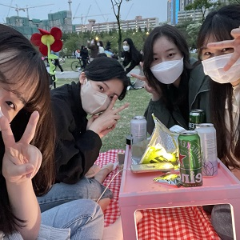

This picture is when we went on a picnic at Han River
in April. The Han River is a large river that crosses Seoul.
Just in time, we went to see the rainbow fountain show at
Banpo Bridge, one of the bridges across the Han River.
We ate chicken, ate ramen, drank beer, and had a healing time.
The rainbow fountain at Han River was really beautiful.